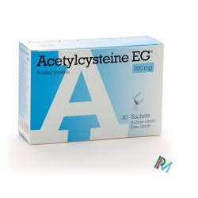

Acetylcysteine

- ဆေးဆိုင်းတွေမှာ Mucomyst တံဆိပ်နဲ့ ရှာလို့တွေ့နိုင်ပါတယ်။
- ပါရာစီတမော အဆိပ်ဖြေတဲ့အခါ သုံးနိုင်သလို အသက်ရှူလမ်းကြောင်းတစ်လျှောက်က ချွဲတွေကိုပျော်ဝင်စေနိုင်တဲ့အာနိသင်လည်းရှိပါတယ်။
ဆေးအသုံးဝင်ပုံ
- ရှုဆေးအနေနဲ့ အဆုတ်လေအိတ်ရောဂါ၊ လေပြွန်ရောင်ခြင်း၊ အဆုတ်ရောင်ရောဂါများတွင် ချွဲပျော်စေနိုင်ပြီး အသက်ရှုရလွယ်ကူစေပါတယ်။
- ဆေးရည်အနေနဲ့ ပါရာစီတမော အသောက်များလျှင်ဖြစ်တတ်သော အသည်းထိခိုက်ခြင်းမှ ကာကွယ်ပေးနိုင်ပါတယ်။
ဆေးအသုံးပြုပုံ
- ရှုဆေးအနေနဲ့ ပထမဦးဆုံးအကြိမ် ရှူရင် အနံ့တစ်မျိုးရနိုင်ပေမယ့် ကျင့်သားရသွားပါလိမ့်မယ်။ နှာခေါင်းဖုံးနဲ့ ရှူရင် စေးစေးဖြစ်နိုင်ပါတယ်။
- ရှူပြီးရင် ရေနှင့်သေချာပြန်ဆေးပါ။ ဆရာဝန်မညွှန်ကြားဘဲ တခြားရှူဆေးတွေနဲ့ တွဲမသုံးရပါ။ ဆေးရည်အနေနဲ့ဆိုရင် ဆရာဝန်ညွှန်ကြားတဲ့ ပမာဏအတိုင်းကို တခြားအရည်တစ်ခုခုနဲ့ ရောဖျော်ပြီး တစ်နာရီအတွင်း သောက်ပေးပါ။
- ဆေးသောက်ပြီး တစ်နာရီအတွင်းအန်လျှင် ဆေးပြန်သောက်ဖို့လိုအပ်တာကြောင့် ဆရာဝန်ကို ချက်ချင်းပြောဖို့ လိုပါမယ်။
ဆေး၏ဆိုးကျိုးများ
- ပျို့အန်ခြင်း၊ ပါးစပ်နဲ့ ဆေးရှူမိရင် ပါးစပ်အနာပေါက်ခြင်း၊ နှာရည်ယိုခြင်းများ ဖြစ်နိုင်ပါတယ်။ လက္ခဏာဆိုးရင် နီးစပ်ရာ ဆေးခန်း သွားပြပါ။
- သောက်ဆေးရည်ရဲ့ ရှားရှားပါးပါး ပြင်းထန်ဆိုးကျိုးအနေနဲ့ ဗိုက်နာခြင်း၊ ဝမ်းမည်းမည်းသွားခြင်း၊ အညိုရောင်အန်ခြင်း စတာတွေ ဖြစ်နိုင်ပါတယ်။
- ရှူဆေးရဲ့ ပြင်းထန်ဆိုးကျိုးအနေနဲ့ ရင်ဘတ်အောင့်ခြင်း၊ အသက်ရှူကြပ်ခြင်းတွေ ဖြစ်နိုင်ပါတယ်။
- ဆေးမတည့်ဖြစ်ခြင်း ရှားပါတယ်။
သတိပြုရန်အချက်များ
- ပန်းနာရင်ကြပ်၊ အစာအိမ်နှင့်အူလမ်းကြောင်းအနာရှိတာ၊ တခြားဆေးသောက်နေတာ ဆရာဝန်ကို ကြိုအသိပေးသင့်ပါတယ်။
- ကိုယ်ဝန်ဆောင်နဲ့ နို့တိုက်မိခင်တွေမှာတော့ ဆရာဝန်ညွှန်ကြားရင် သုံးနိုင်ပါတယ်။
ဆေးအာနိသင်
- Acetylcysteine ဆေးနဲ့ တခြားဆေးတွေ၊ တိုင်းရင်းဆေးတွေနဲ့ ဓာတ်ပြုနိုင်ပါတယ်။
- သွေးစစ်ချက်မှာလည်း အဖြေမမှန်နိုင်တာကြောင့် သွေးစစ်မှု မပြုလုပ်ခင် ဆေးသောက်ထားတယ်ဆိုတာ ကြိုတင် အသိပေးဖို့လိုပါမယ်။
- ပါရာစီတမော အဆိပ်ဖြေတဲ့နေရာမှာ သုံးရင်တော့ အသည်း၊ ကျောက်ကပ်၊ သွေးကို မပြတ်စစ်ပြီး ဆေးကို လိုတိုးပိုလျှော့လုပ်ရပါတယ်။
ဆေးသောက်လွန်ခြင်း
- ပြင်းပြင်းထန်ထန်ဗိုက်အောင့်ခြင်း၊ ပျို့အန်ခြင်း၊ အသက်ရှုကြပ်ခြင်းများ ဖြစ်တတ်ပါတယ်။
Source– ဒေါက်တာအိမ့်ချယ်ရီ